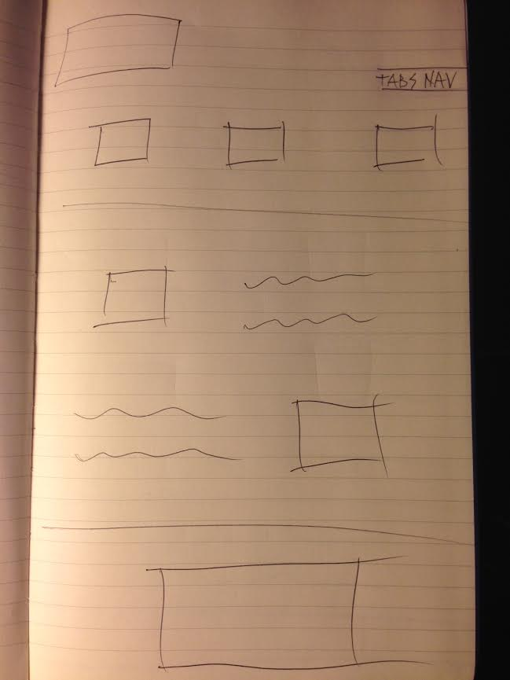
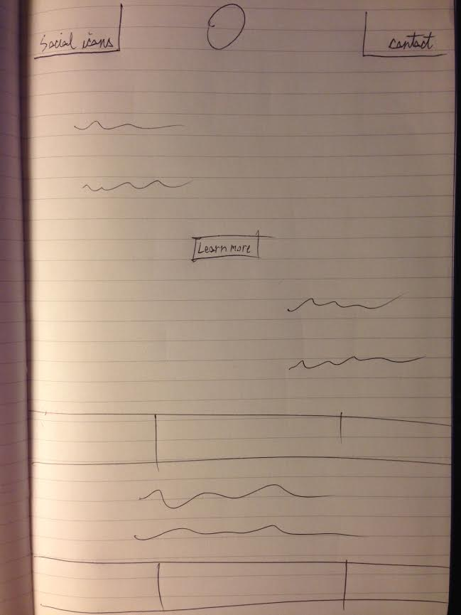
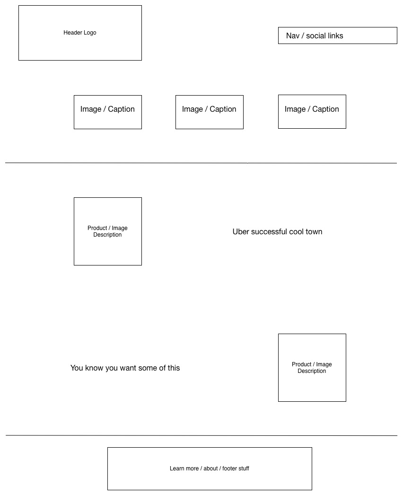

Which two websites are you most inspired by?
- MIXD World Class Web Design
- The Greenwich Hotel
How do they exhibit effective use of space, size or balance?
MIXD is beautifully minimal and uses negative space to give you a page layout with everything you need to learn more that isn't overwhelming.
The Greenwich Hotel is also minimal and keeps its links to one side to use the rest of the page to showcase its powerful imagery of an obviously luxurious place to stay.
What makes them similar and different?
Both sites are minimal and seek to draw you in with simple and effective imagery.
The hotel site has a bit more going on, since as a business it needs an address, phone number and numerous naviagation links.
MIXD is definitively minimal, and simply inviting you to discover what they're all about.
Thumbnail Sketches:
Portfolio.
Portfolio sketch is balanced from top to bottom with information presented in descending order of importance. Your eyes
are immediately drawn to header images and can flow to content images below.

Business.
Business sketch is simple and gets the point across right away with plenty of balanced content.

Blog.
Blog sketch is less cluttered with contact info up top, more room for floating text content in the middle, and keeps most about information near the bottom of the page.
Portfolio.
Just seeing what I could do with omnigraffle.
